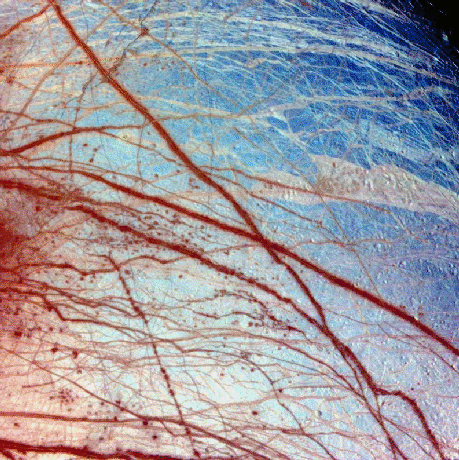
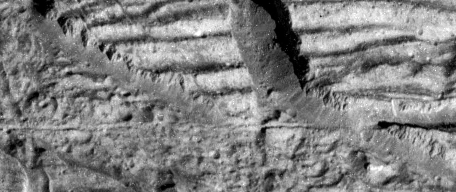

ASTR 1210 (O'Connell): Selected Europa Images
Europa, the second Galilean satellite of Jupiter, is now regarded as one
of the best candidate biospheres in the solar system because of the
evidence for large amounts of liquid water beneath its icy outer crust.
Here are some images of Europa from the
Galileo Mission.
For general information on Jupiter and the Galilean satellites, see
Study Guide 20.
Europa Hemisphere
The view of Europa combines images taken in violet, green and near-infrared
filters in 1998 and 1995. The colors have been stretched to show the
subtle differences in materials that cover the icy surface of Europa.
Reddish linear features are some of the cracks and ridges, thousands of
kilometers long, which are caused by the tides raised by the
gravitational pull of Jupiter. Mottled, reddish "chaotic terrain"
exists where the surface has been disrupted and ice blocks have moved
around. The red material at the ridges and chaotic terrain is a non-ice
contaminant and could be salts brought up from a possible ocean beneath
Europa's frozen surface.
Also visible are a few circular features, which are small impact
craters. Europa's surface has very few craters, indicating that recent
or current geologic activity has removed the traces of older impacts.
The paucity of craters, coupled with other evidence, has led scientists
to surmise that there could be an ocean of liquid water beneath
Europa's surface. Where there is water, there could be life. This is
why Europa is a target of current interest for study of the possibility
of non-Earth life. A follow-up spacecraft to Galileo will be Europa
Orbiter, which should determine whether or not Europa has an ocean.

Surface of Europa
The surface of Europa is covered with ice. By comparison to most
terrestrial planets or satellites, it is extraordinarily smooth. Closeup
images like this one show that the surface is probably a relatively thin
layer of ice overlying an ocean. The blue here is ice, and the red lines
are probably cracks, colored by a thin coating of darker material possibly
ejected by ice volcanoes that occur along the cracks.
A Closer View
This mosaic of a region in the northern hemisphere of
Europa, displays many of the features which are typical on the
satellite's icy surface. Brown, linear (double) ridges extend
prominently across the scene. They could be frozen remnants of
cryovolcanic activity which occurred when water or partly molten water
ice erupted on the Europan surface, freezing almost instantly in the
extremely low temperatures so far from our sun. Dark spots, several
kilometers in diameter, are distributed over the surface. A
geologically older, smoother surface, bluish in tone, underlies the
ridge system. The blue surface is composed of almost pure water ice,
whereas the composition of the dark, brownish spots and ridges is not
certain. One possibility is that they contain evaporites such as
mineral salts in a matrix of high water content.
<
Ice Rafts on Europa
View of a small region of the thin, disrupted, ice crust in the
Conamara region of Jupiter's moon Europa showing the interplay of
surface color with ice structures. The white and blue colors outline
areas that have been blanketed by a fine dust of ice particles ejected
at the time of formation of the large (26 kilometer in diameter) crater
Pwyll some 1000 kilometers to the south. A few small craters of less
than 500 meters or 547 yards in diameter can be seen associated with
these regions. These were probably formed, at the same time as the
blanketing occured, by large, intact, blocks of ice thrown up in the
impact explosion that formed Pwyll. The unblanketed surface has a
reddish brown color that has been painted by mineral contaminants
carried and spread by water vapor released from below the crust when it
was disrupted. The original color of the icy surface was probably a
deep blue color seen in large areas elsewhere on the moon. The colors
in this picture have been enhanced for visibility.
North is to the top of the picture and the sun illuminates the surface
from the right. The image, centered at 9 degrees north latitude and 274
degrees west longitude, covers an area approximately 70 by 30
kilometers (44 by 19 miles), and combines data taken by the Solid State
Imaging (CCD) system on NASA's Galileo spacecraft during three of its
orbits through the Jovian system. Low resolution color (violet, green,
and infrared) data acquired in September 1996, were combined with
medium resolution images from December 1996, to produce synthetic color
images. These were then combined with a high resolution mosaic of
images acquired on February 20th, 1997 at a resolution of 54 meters (59
yards) per picture element and at a range of 5340 kilometers (3320
miles).

Ice Cliffs on Europa
This image, taken by the camera onboard NASA's Galileo spacecraft, is a
very high resolution view of the Conamara Chaos region on Jupiter's
moon Europa. It shows an area where icy plates have been broken apart
and moved around laterally. The top of this image is dominated by
corrugated plateaus ending in icy cliffs over a hundred meters (a few
hundred feet) high. Debris piled at the base of the cliffs can be
resolved down to blocks the size of a house. A fracture that runs
horizontally across and just below the center of the Europa image is
about the width of a freeway.
North is to the top right of the image, and the sun illuminates the
surface from the east. The image is centered at approximately 9 degrees
north latitude and 274 degrees west longitude. The image covers an area
approximately 1.7 kilometers by 4 kilometers (1 mile by 2.5 miles). The
resolution is 9 meters (30 feet) per picture element. This image was
taken on December 16, 1997 at a range of 900 kilometers (540 miles) by
Galileo's solid state imaging system.
Cross Section Model of Europa
Cutaway view of the possible internal structure of Europa The surface
of the satellite is a mosaic of images obtained in 1979 by NASA's
Voyager spacecraft. The interior characteristics are inferred from
gravity field and magnetic field measurements by NASA's Galileo
spacecraft. Europa's radius is 1565 km, not too much smaller than our
Moon's radius. Europa has a metallic (iron, nickel) core (shown in
gray) drawn to the correct relative size. The core is surrounded by a
rock shell (shown in brown). The rock layer of Europa (drawn to correct
relative scale) is in turn surrounded by a shell of water in ice or
liquid form (shown in blue and white and drawn to the correct relative
scale). The surface layer of Europa is shown as white to indicate that
it may differ from the underlying layers. Galileo images of Europa
suggest that a liquid water ocean might now underlie a surface ice
layer several to ten kilometers thick. However, this evidence is also
consistent with the existence of a liquid water ocean in the past. It
is not certain if there is a liquid water ocean on Europa at present.
Images and captions courtesy of NASA/Galileo Project and the
University of Arizona.
Last modified
December 2020 by rwo
{kind=link}
 Back to Guide 20
Back to Guide 20
 To Guide Index
To Guide Index